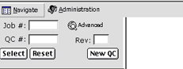
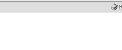
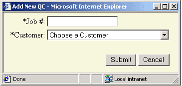

To get started launch the QCS application in your Inernet Explorer 5 (or later) browser on you PC. You will get the following screen.
|  |  | ||
As you can see, the right part of the screen is blank. On the left upper corner, inside the browser you will see a button called Navigate. This button displays the Select and Tree Frame for navigation through the QC records stored in the database.
| SELECT FRAME BUTTONS |
|
The Advanced button shows an advanced search on the database incase the user does not know the Job Number or QC Number. You can search for Bar Code, Client, QC Operator or Dates. | ||
|
The New QC button will create a new QC Number so long as a Job Number has been entered. The user will get a screen like the one below. The Job Number is a maximum of ten places and can be alpha-numeric. The cutomer selection will be from a predetermined pulldown menu. After clicking the Submit button the Tree Frame (left blue area) will display the new QC record with default values. |
||
|  | |||
|
The Select button will query the database and display the QC records based on the information entered in the text boxes (for example in the Job Number box).
|
||
| Reset QC Button | The Reset QC button allows the user to clear the Job#, QC# and Rev. fields. |